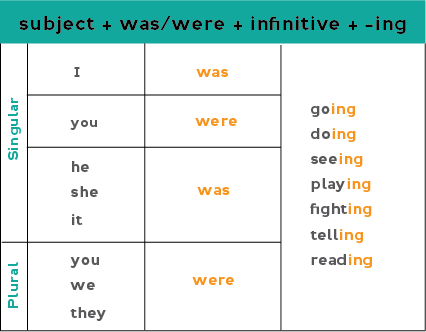

Past Continuous
це граматичний час, який описує дію, що тривала в певний момент або період у минулому, часто переривалася іншою коротшою дією або відбувалася паралельно з іншою довгою дією. Формується за допомогою допоміжних дієслів was/were + дієслово з закінченням -ing (наприклад, I was reading - Я читав).
